Lead white
Built up thick in the lights; in places mixed with chalk.

 RembrandtThe Night Watch · 1642All 15
RembrandtThe Night Watch · 1642All 15A studio guide · Amsterdam, 1640–42
Imagine you are Rembrandt van Rijn, in your mid-thirties and newly settled in a grand house in Amsterdam, with a commission to paint Captain Frans Banninck Cocq's militia company for the great hall of their guild house. This guide follows what your process would have been, from a brown ground and a sketch in chalky paint to a company stepping out of the shadows, worked from the back of the scene to the front. Then it follows the canvas: cut down to fit a wall, darkened, attacked, and studied since 2019 in a glass room.
Operation Night Watch, the Rijksmuseum's research project begun in 2019, has published the ground, the sketch under the paint and much of the palette; a study of 1976 described how the paint was built up. The order of the later stages is inferred. Each chapter opens with a note on what its evidence is. The slider steps through nine stages on the canvas as it was before 1715; stages 1 to 6 and 8 are AI reconstructions.
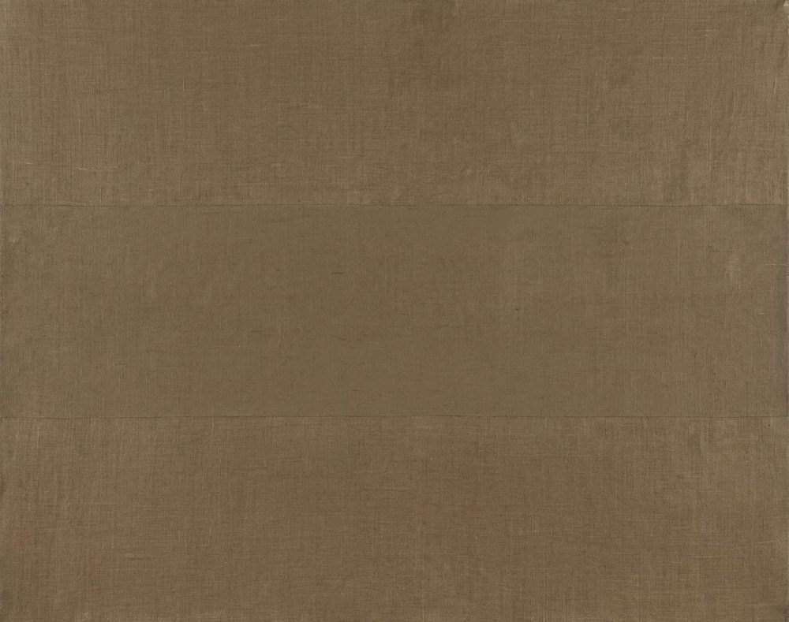
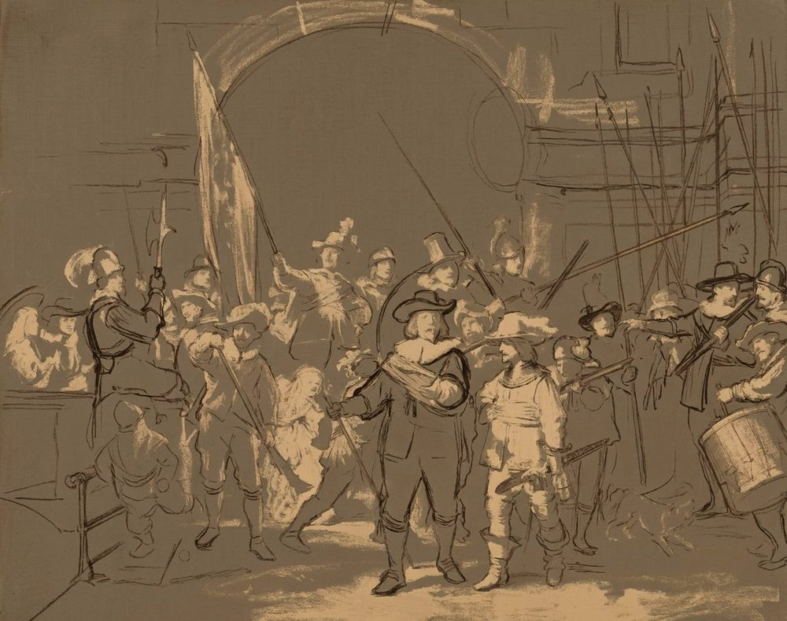
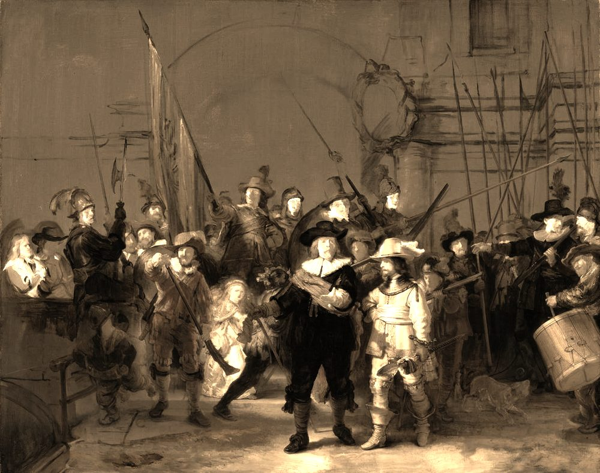
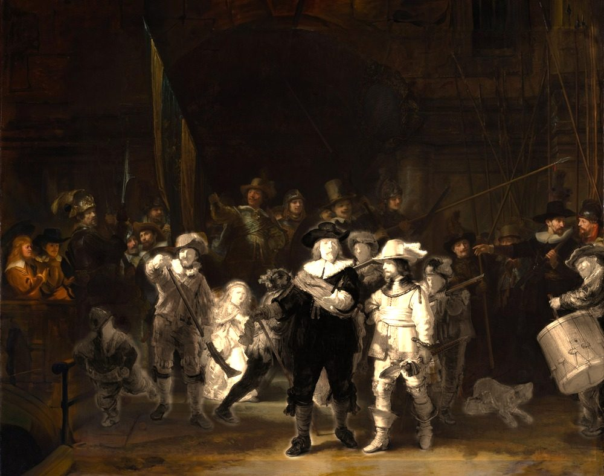
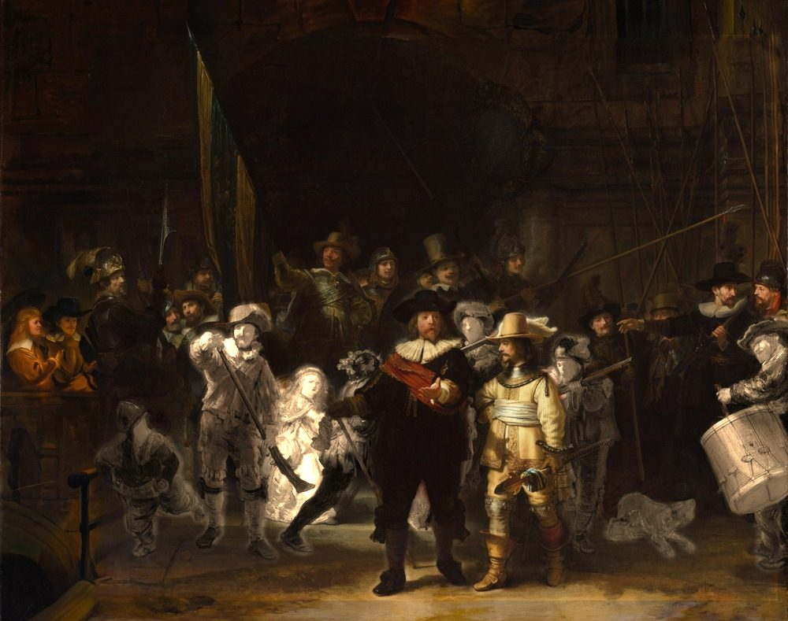
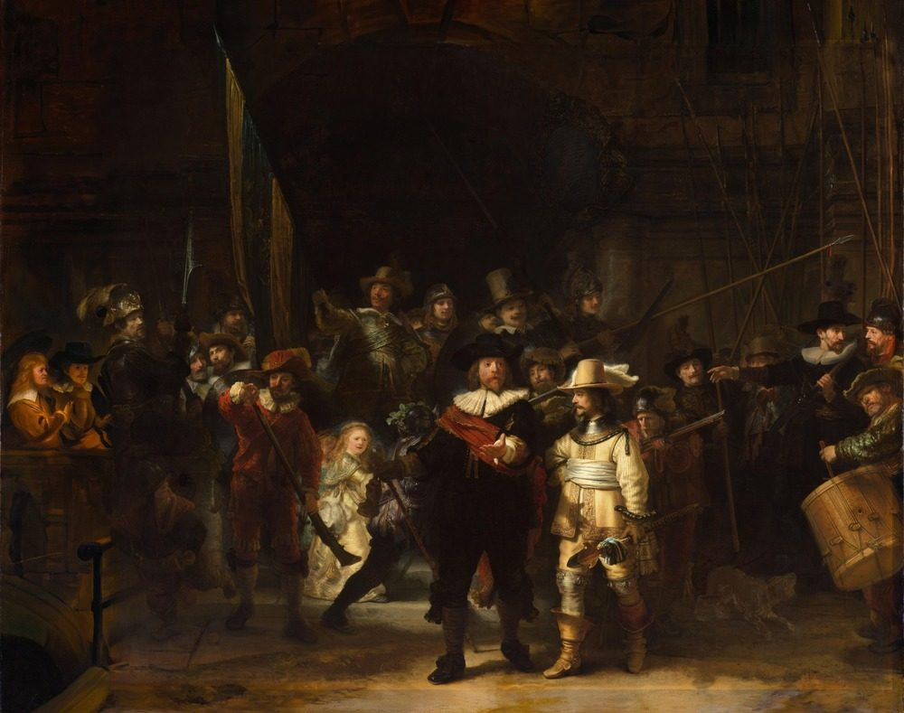
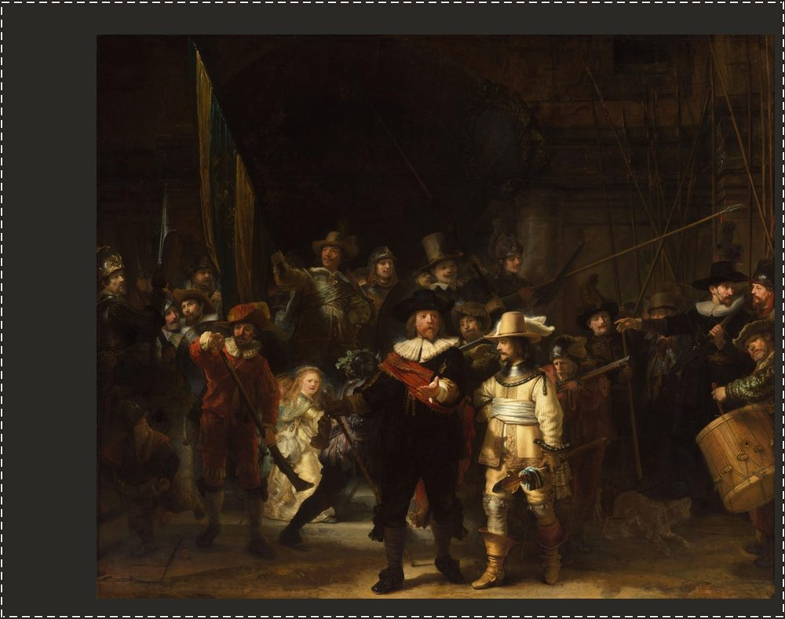
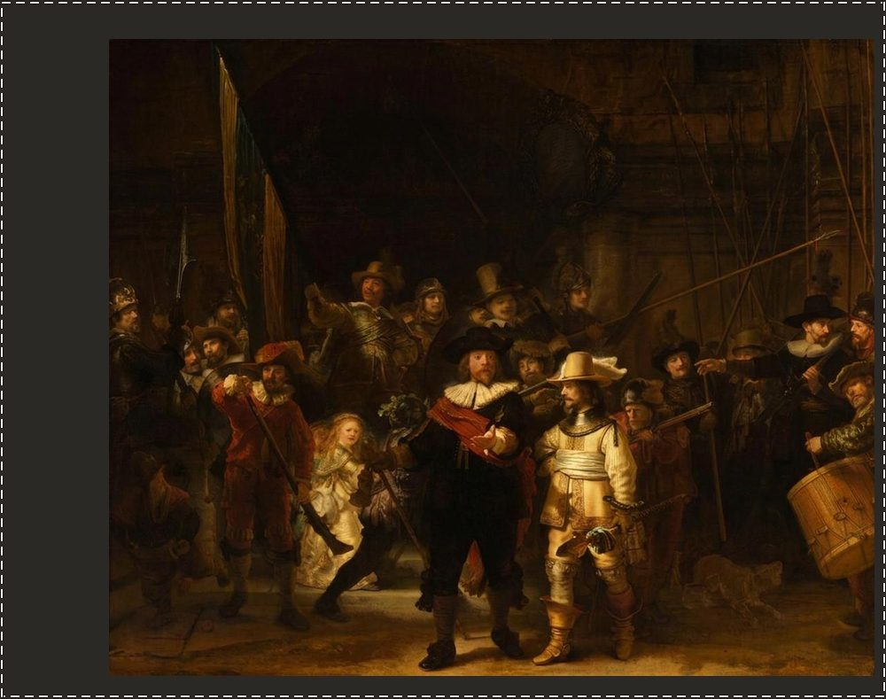
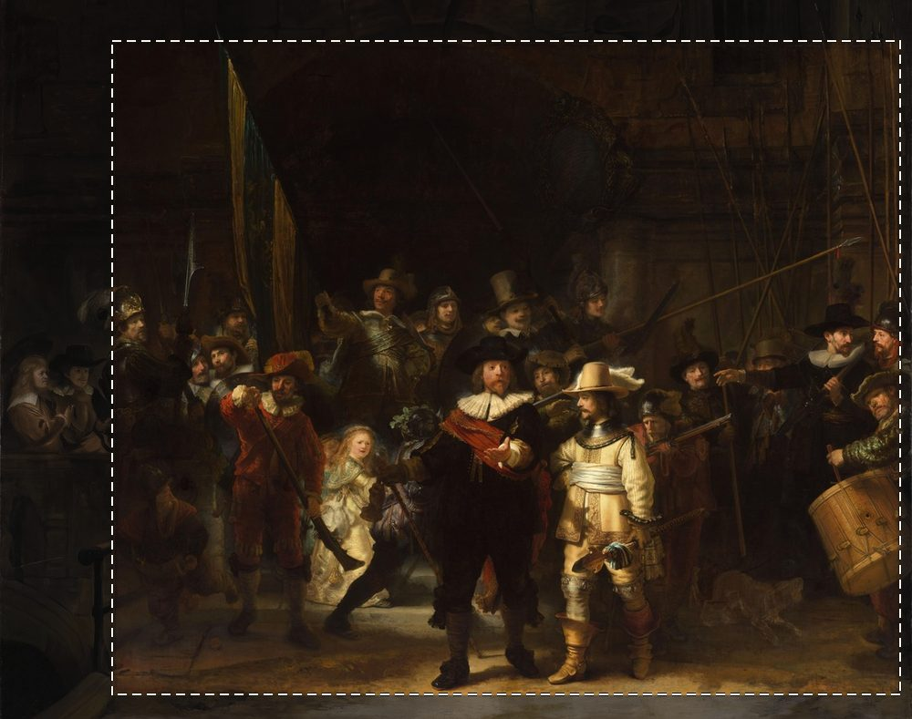
Today
Stage 9 of 9The painting today, 379.5 by 453.5 cm. The dashed line marks the 1715 cut; outside it the lost strips are shown faded, from stage 6.
EvidenceStandard biographies, beginning with Jan Orlers's description of Leiden (1641), and the museums' records of the paintings shown.
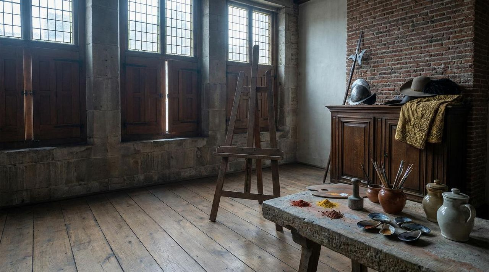
You are Rembrandt van Rijn, born in Leiden in 1606, a miller's son. After the Latin school and a brief enrolment at the university, you train for about three years with Jacob van Swanenburgh in Leiden, then for six months in Amsterdam with Pieter Lastman, a painter of crowded history scenes.
Back in Leiden you work alongside Jan Lievens. Around 1631 you move to Amsterdam and paint portraits in the business of the art dealer Hendrick Uylenburgh. In 1632 you paint The Anatomy Lesson of Dr Nicolaes Tulp for the surgeons' guild: a group portrait of surgeons gathered round a corpse.
In 1634 you marry Saskia van Uylenburgh, the dealer's cousin. In January 1639 you buy a large house on the Sint-Antoniesbreestraat, on credit. The commission for this painting comes soon after.
EvidenceThe Rijksmuseum's records of the seven paintings made for the hall; Gerard Schaep's description of the hall in 1653; testimony about the payment given years later, known only from a paraphrase of 1916. No contract survives.
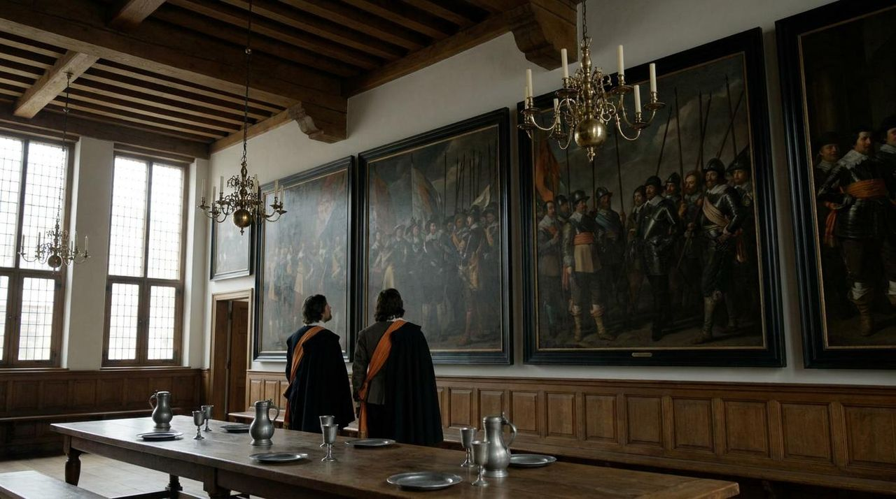
Amsterdam's civic guard is a militia of citizens, organised by district. The Kloveniers, the arquebusiers, meet in the Kloveniersdoelen on the Amstel, beside the old tower called Swijgh Utrecht. Its new great hall is ready in or shortly before 1638, and over the next years the guard fills it with group portraits: six companies and the guild's governors, seven paintings in all.
Your company is that of District II, under Captain Frans Banninck Cocq and Lieutenant Willem van Ruytenburch. The commission comes from the sitters, or from someone acting for them, and reaches you before December 1640, when one of the men you will paint dies. The other painters for the hall are Bartholomeus van der Helst, Govert Flinck, Jacob Backer, Joachim von Sandrart and, probably, Nicolaes Eliasz Pickenoy.
The men pay for their own places in the picture. Years later, in 1658 or 1659, two of them testified that sixteen of those painted paid about 100 guilders each, some more and some less according to where they stood. A third man, Claes van Cruysbergen, put the total at 1,600 guilders, though he had it only from hearsay.
Gerard Schaep's list of 1653 walks round the hall: your painting hangs next to Flinck's, probably on the long wall opposite the windows. The shield on the arch with eighteen names, the captain's first, was painted over the varnish, after the picture was finished; dates proposed for it range from the 1640s to about 1653.
EvidenceThe painting and the Rijksmuseum's descriptions; the caption in Banninck Cocq's family album; Samuel van Hoogstraten, who trained with you in the 1640s, writing in 1678. No document names the prints you may have used.
The other painters for the hall line their men up or seat them at table, and give every face its share of light. You choose a moment instead: the captain steps forward and gives an order, and the company behind him starts to move out from under an arch, with its flag, its lances and its drum.
Your former pupil Samuel van Hoogstraten, writing in 1678, says you held the picture together very well but, in the opinion of many, too well, making more of the image you chose than of the portraits you were commissioned to paint. Still, he expected it to outlast all its rivals: so painterly in conception, so dashing and so powerful that, some said, the other paintings in the hall looked like playing cards beside it. He only wished you had kindled more light in it.
No document says so. The men paid, the painting hung in their hall for seventy years, and Banninck Cocq owned a painted copy and a watercolour of it. The story of a rejected picture that ruined you is a later legend; Seymour Slive took it apart in 1953.
EvidenceOperation Night Watch: Broers and colleagues (2023) on the ground and the lead layer; De Keyser and colleagues (2024, 2025), Gabrieli and colleagues (2026) and Broers and colleagues (2026) on the pigments; the 1976 study by Van de Wetering, Groen and Mosk.
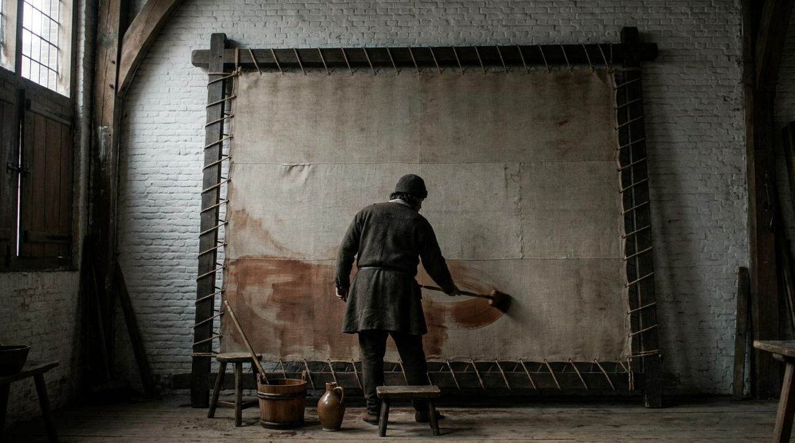
The canvas is far bigger than anything you have painted: three horizontal widths of medium-weight linen, sewn together, about four metres high and five across before it was cut down. It will hang on the long outer wall of the great hall.
Before any ground goes on, the bare linen is brushed with an oil containing lead, in big semicircular strokes; the X-ray fluorescence maps show them, with the imprint of the original stretcher. The 2023 study found no glue size beneath it, though a test in 1976 had suggested one. The Rijksmuseum's team proposed that the layer was meant to keep out the damp of that wall; it has not been seen in your other work or your contemporaries'.
Then the ground: not the red earth and grey you have used on canvas before, but a single, thick layer of quartz and clay, a drab grey-brown. This is its first known use; it may have been cheaper, lighter and easier to roll than the old double ground, though no document says why you changed. The same kind of ground has not been found in other Amsterdam workshops of the time.
Operation Night Watch mapped the elements over the whole canvas and sampled it in places. The swatches approximate each pigment's colour in oil; the cards say where it was found and how.
Built up thick in the lights; in places mixed with chalk.
The lemon-coloured yellow of the lieutenant's costume, type I.
An orange arsenic sulfide, partly glassy, perhaps made by heating. New to Rembrandt's palette.
Yellow earth for most of the shadows; red earth only where the white sash throws its shadow.
The bright red of the captain's sash and of the musket's flame.
Made from insects, cochineal or kermes; glazed over vermilion or mixed with it.
Ground cobalt glass, the most important blue in the painting, in the background and in the clothes. It browns with age.
A copper blue for the lighter blue details.
Charred bone, rich in calcium and phosphorus, in the blacks and the deepest shadows.
EvidenceThe Rijksmuseum's announcement of December 2021 and Petria Noble (2025), from the calcium map made by MA-XRF; the 1976 study of samples taken after the knife attack; Lenders (2025) on the dog. The sketch's lines are known only in part.
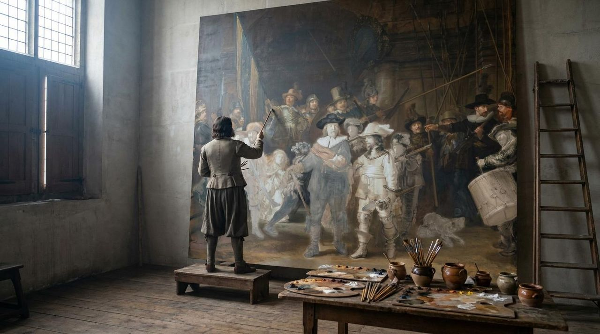
Brush the whole composition onto the brown ground in a beige paint rich in chalk, with some forms in dark brown. The calcium in it shows up in the X-ray fluorescence map, most clearly at the top, where only one layer of background paint covers it.
The sketch is close to the final picture, but not the same: there were feathers on Claes van Cruijsbergen's helmet, Rombout Kemp's leg stood differently, there are signs of another sword between the captain and the lieutenant, and more lances stuck up above the company.
Brush in the light areas quickly in thick, whitish paint, sometimes well away from where the forms end up; the lieutenant is almost entirely white at this stage. This is the dead colouring the 1976 study found under collars, armour and boots. The chalky sketch already marks some lights, such as the dog's back, so sketch and dead colour may have been a single campaign.
Leave the grey-brown ground bare wherever it can serve as shadow. It shows, for example, in the shadows of Rombout Kemp's pointing hand.
The clearest view of the sketch is the calcium map, made in 2019 by scanning the whole canvas with X-ray fluorescence. Brighter means more calcium. The chalky sketch accounts for much of it, but calcium is also in the bone black of the shadows and in chalk mixed into later paint, so not every light line is the sketch. It reads most plainly in the background, where only a thin layer of paint covers it.
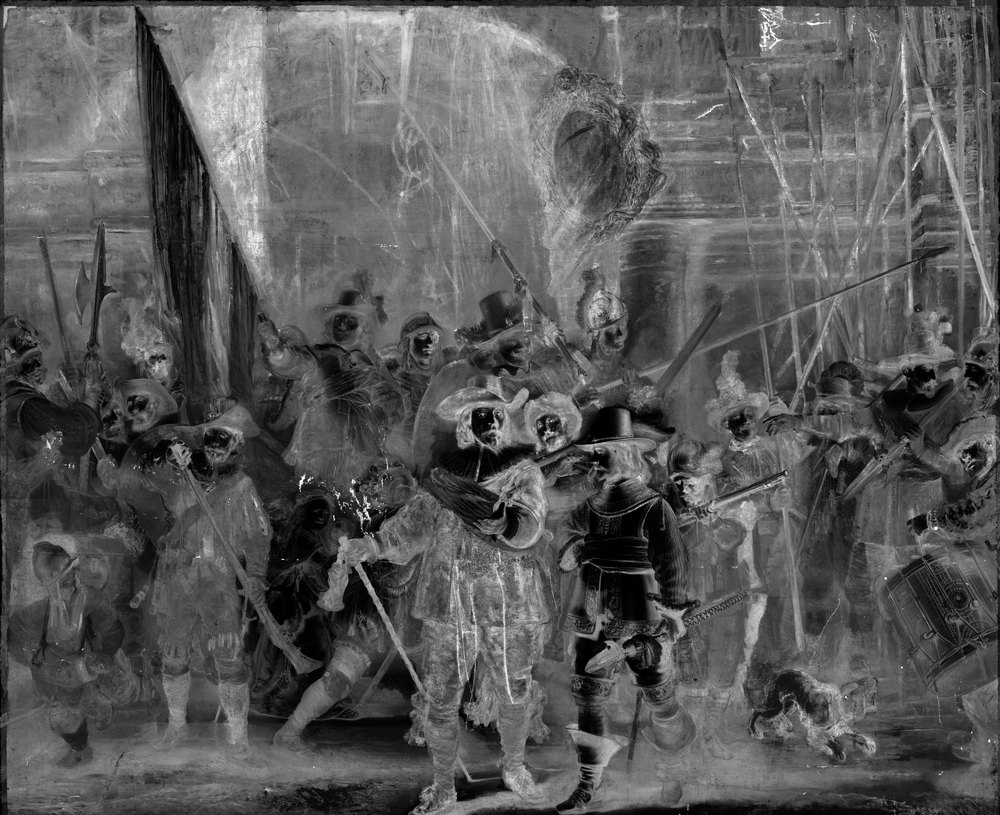
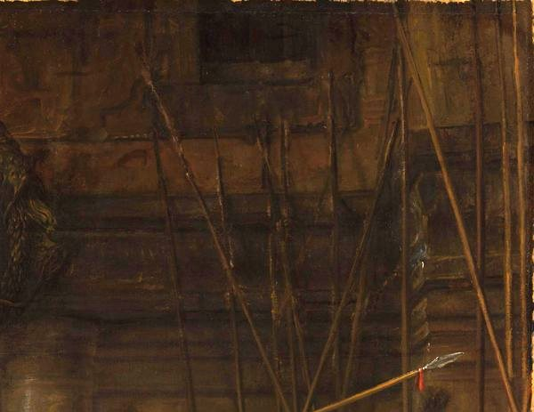
The painting at the upper right, brightened.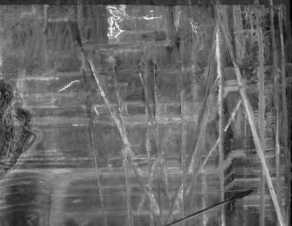
The calcium map: more lances than the painting shows.One place where the sketch can be seen with the naked eye is the dog at the lower right. Its thin top paint has worn away, and the chalky sketch beneath, with crusts of salts that formed in the paint itself, now gives it a pale, blanched look you did not intend. The sketch already drew the cleft of its skull and the light along its back.
In 2025 the Rijksmuseum identified the dog's model: a drawing of 1619 by Adriaen van de Venne for the title page of Jacob Cats's Self-stryt, with a small dog barking in the same pose. Your sketch first bent its right foreleg lower, closer to the drawing.
EvidenceVan de Wetering, Groen and Mosk (1976) and De Keyser and colleagues (2025) on the reserves; Gabrieli and colleagues (2021, 2026) on the reds. That the background came first is documented; the order of the three steps here is inferred.
The X-rays show the ragged outlines of reserves left in the background for Banninck Cocq, for the leg of the firing musketeer and for the lances, and the lead map shows the lieutenant's silhouette kept free while the background went in. So the scene was worked up from the back to the front.
AI-generatedAfter step 3: gold and gunfire
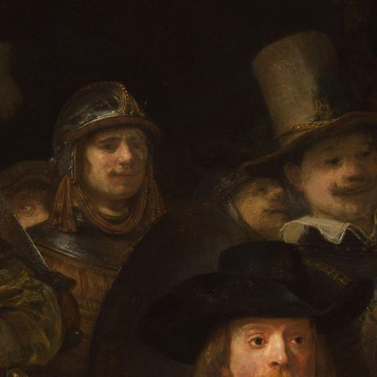
Start with the architecture and the men at the back. Inside the arch one brownish-grey layer over the ground is enough; the lances get two reddish-brown layers and then a stroke of yellow where the light catches them, or black where it does not.
Apart from the lit figures in front, Petria Noble writes, the paint here went on with great economy, in one or two layers, and the brown ground was left to do the work in the shadows.
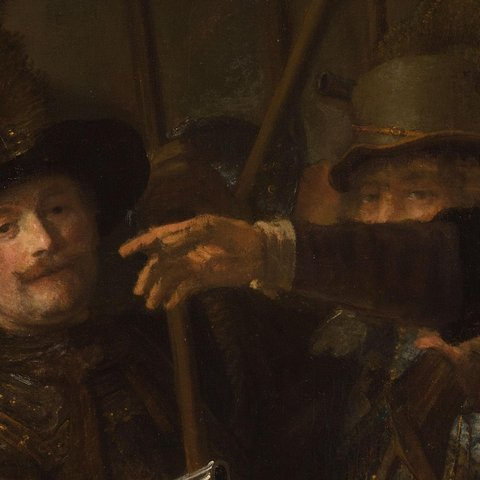
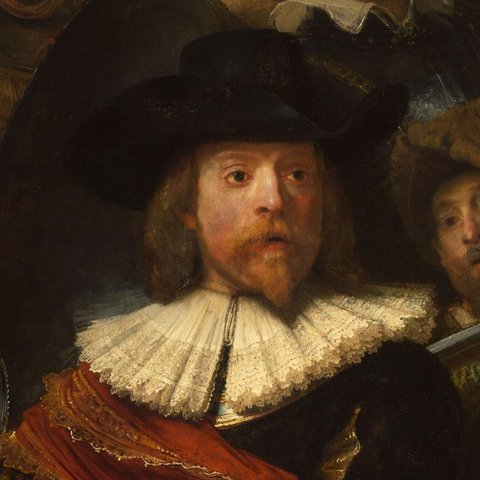
Now the two men who lead the company. For the captain's sash, lay down a layer of vermilion first, then model its folds with dark strokes of red lake.
For the lieutenant, build up the embroidery in several layers of thick lead white, let them dry fully, and only then paint the gold over them in lead-tin yellow, ochres and an orange arsenic pigment, pararealgar.
Plan the shadow that the captain's hand throws across his lieutenant's coat from the start; it is built of yellow earth, red-lake glazes and scumbles of bone black.
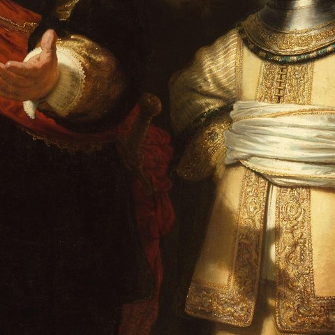
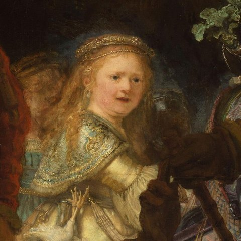
Last, the figures the light picks out: the girl in gold, the musketeer in red loading his gun, a shot going off just behind the lieutenant's hat, the drummer and the dog.
The musketeer's red is a mixture of vermilion and red lake; the flame of the shot is mostly vermilion with some red ochre.
Sign on the step at lower left: “Rembrandt f 1642”.
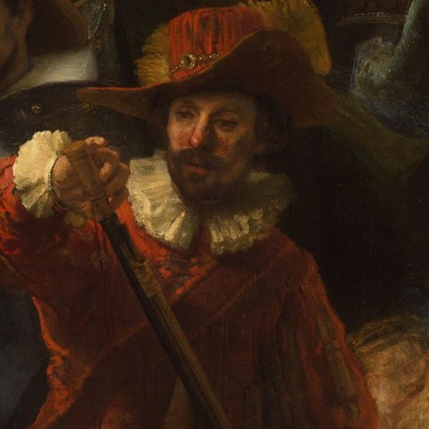
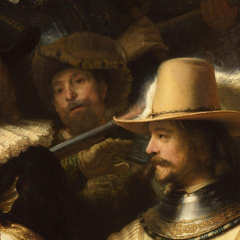
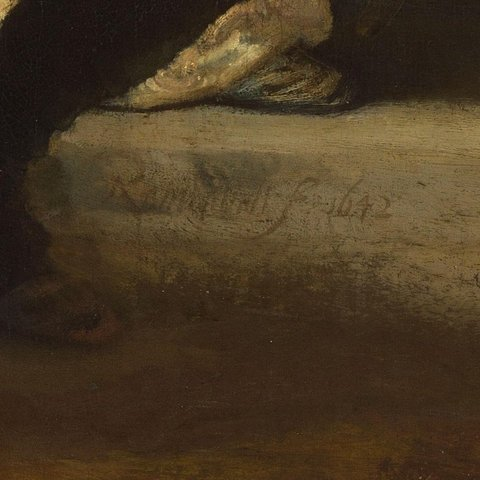
EvidenceThe Rijksmuseum's provenance record and its 2021 reconstruction, which measured the strips against Gerrit Lundens's copy; the National Gallery, London, for the copy. The strips themselves are lost.
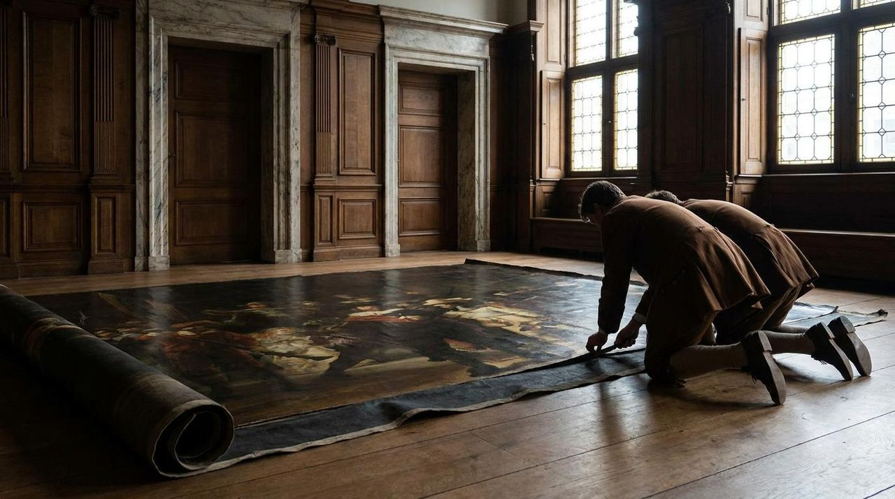
The painting hangs in the Kloveniersdoelen for some seventy years. In May 1715 the city orders it cleaned and moved to the Town Hall on the Dam, now the Royal Palace, to hang in the Small War Council chamber. The order says nothing about cutting, but it is cut down on all four sides; the earliest account, by the painter Jan van Dyk in 1758, says it was cut to fit between two doors.
By the Rijksmuseum's 2021 measurements, about 64 centimetres came off the left, 23 off the top, 11 off the bottom and 7 off the right. On the left you lose two militiamen and a child on a bridge, and the new edge runs through the man in armour. The strips have never been found.
The cut also moved the centre. With the strips in place, the captain and lieutenant stand to the right of the middle, with open floor before them to the left; today they are nearly central.
What was lost is known mainly from a small copy on panel, probably by Gerrit Lundens, painted in the 1640s while the canvas was still whole and probably made for Banninck Cocq himself. It is not exact: Lundens left out the shield of names and set one pikeman higher. A watercolour in Banninck Cocq's family album shows the same composition, but it was copied from Lundens's panel, not from the painting.
In 2021 the Rijksmuseum hung its own reconstruction of the strips, made with AI trained on the painting and the copy, around the painting for several months. Its images carry no open licence, so stage 6 here is an independent and rougher version.
EvidenceThe restorers' reports of 1976 and the account of the treatments by Woltman and colleagues (2024), who count at least 31; the Rijksmuseum's history of the painting; press and museum accounts of the attacks; Raven and colleagues (2026) on the acid attack.
Varnish goes on, comes off and goes on again: the museum's conservators count at least 31 treatments. Layer by layer it browns. The Rijksmuseum calls the scene a march by daylight, but in 1797 a document calls it The Night Watch, and the name sticks; the darkened varnish is the usual explanation.
In 1851 it gets its first lining with wax and resin, but the thick old varnish is left on and, later, repeatedly “regenerated” with alcohol vapour. When war comes in 1939, the painting is rolled up and evacuated, first to bunkers near the coast and from 1942 to a vault in the Sint-Pietersberg caves near Maastricht. After the war it is lined again and part of the old varnish is removed.
Three attacks follow. In 1911 a man slashes it with a shoemaker's knife, but only the varnish is scratched. On 14 September 1975 a man attacks it with a knife, making twelve cuts, mainly in and around the captain and the lieutenant, and cutting a triangle of canvas out of the captain's breeches. It is restored in a little more than eight months, lined again and varnished with dammar and a little poppy-seed oil, and is back on show on 3 June 1976.
On 6 April 1990 a man sprays concentrated sulphuric acid over an area of about 79 by 52 centimetres, across the face of the red musketeer and part of the shield. Guards spray it with water at once. Only the varnish seemed affected, and it was renewed; a study published in 2026 expects some damage to the paint to show once the varnish is off.
EvidenceThe Rijksmuseum's announcements and research pages, 2019–2026, and the papers listed under Sources. The treatment is still in progress.
On 8 July 2019 the Rijksmuseum begins the largest study ever made of the painting, in a glass room in the Gallery of Honour so that visitors can watch. Scientists, conservators and photographers scan every square centimetre: element maps by X-ray fluorescence, reflectance images from visible light to infrared, X-ray diffraction, 3D scans of the surface and photographs at 5 micrometres to the pixel.
The scans found the chalk sketch, the lead-containing layer under the ground, a new arsenic pigment and much else in this guide. They also showed what time has done: lead soaps, white crusts and hazes, browned smalt, worn passages such as the dog, and in places remnants of old varnish full of salts that earlier restorations left behind.
In 2022 the canvas went onto a new aluminium stretcher with springs, to even out the tension that had rippled its upper left corner. At the end of that year the museum decided on a full treatment: take off the varnish and old retouchings, fill and retouch again, and varnish anew. The varnish removal began at the end of 2024, section by section, with the last traces taken off under the microscope, and as of the Rijksmuseum's 2026 programme it is still under way, with no end date announced. The dog will not be repainted.
The project's maps of the elements and its infrared images are published as open data under a CC BY 4.0 licence. The calcium map in chapter V comes from them.
Where you painted a canvas this size: in 2025 a curator at the Rembrandt House suggested a room at the back of your house, but nothing documents it. How long it took: at least a year, the Rijksmuseum thinks. The exact size before 1715, since the published measurements do not quite agree, and what the lost strips showed beyond what the copies record. When the shield of names was added. Whether the chalky sketch and the whitish dead colour were one campaign or two.